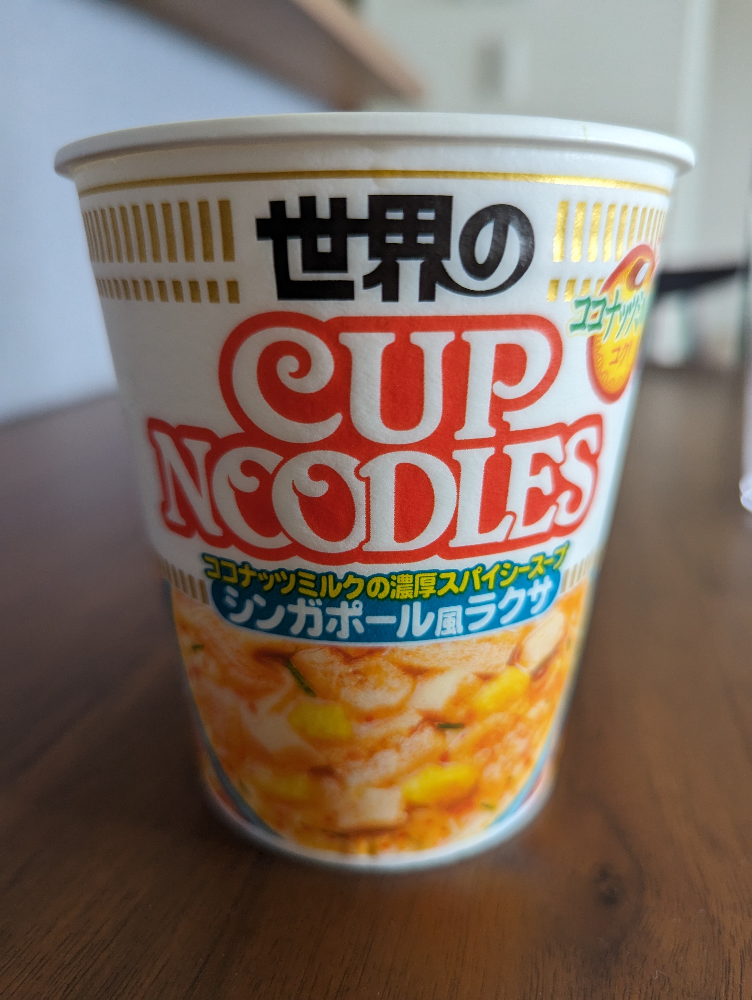
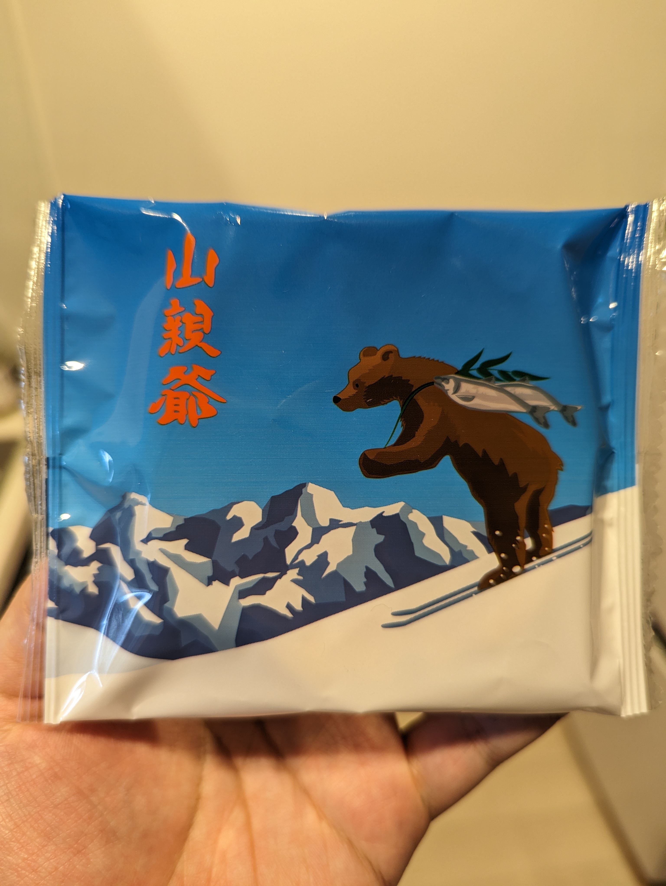

ラクサのカップヌードルを食べた。

ラクサのカップヌードル、かなりおいしくて驚いた。私はこういうエスニック系の食べ物が好きだ。あの酸っぱさが口に合う。この文章を書いている今、冗談抜きでよだれが出てきてる。犬のようだ。
酸っぱさをイメージすると唾液が分泌されるのは面白い。小3くらいの頃に理科の先生が、「梅干し梅干し梅干し酸っぱい酸っぱい！」とかなんとか急に叫んで、唾液を分泌させることで人間の反射について教える授業があって、私はあれを妙に覚えている。唾液がどうのこうのというより、単純にびっくりしたのだ。体がビクッとした。いきなりでかい声で先生が叫んだから。いい先生だった。

山親爺も食べた。山親爺は北海道のお菓子だが、白い恋人のようにメジャーではない。味は瓦せんべいみたいな感じでうまい。